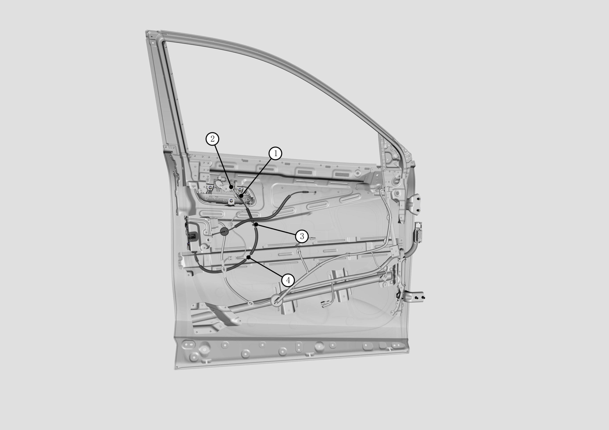
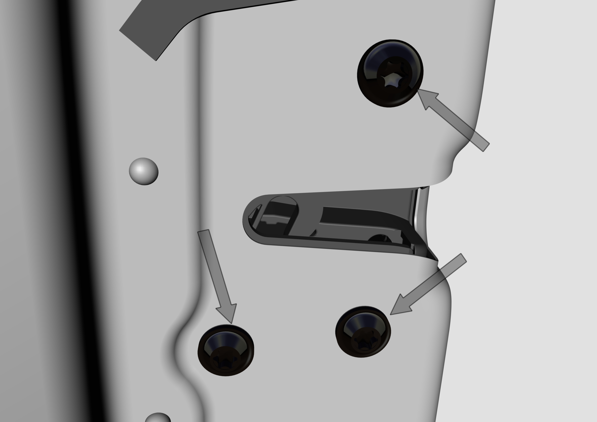
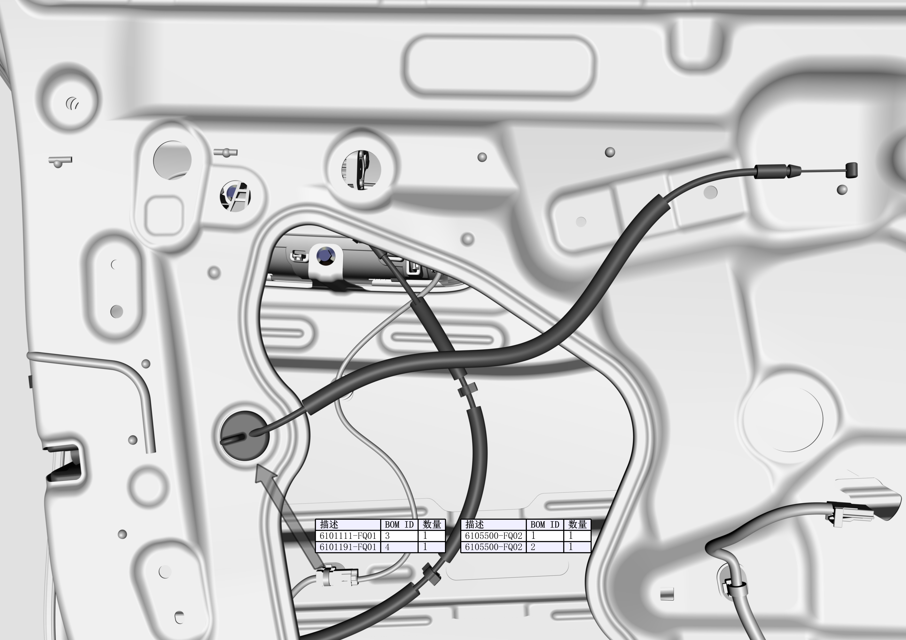
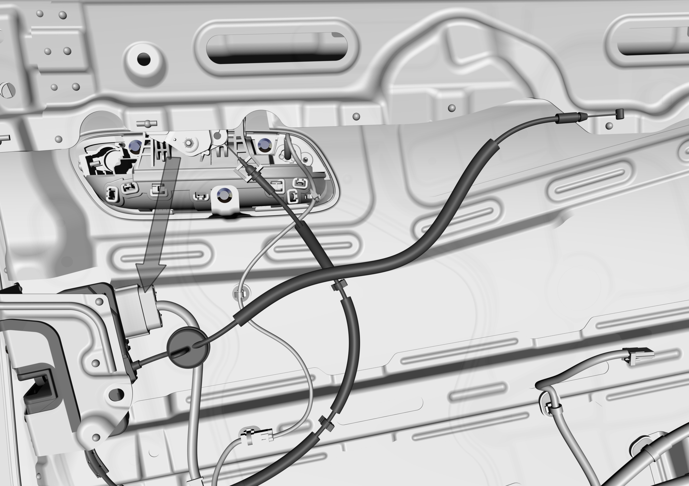

Узел замка передней двери
Снятие
Здесь описаны Снятие и Установка узла замка левой передней двери, снятие и установка узла замка правой передней двери выполняются аналогично.
-
Снять обивку передней двери. См. Снятие и установка узла облицовки переднего капота.
-
Отодрать водонепроницаемую пленку левой передней двери.
-
按序号1,2,3,4拆卸前门外开拉索，“箭头”指示处。

-
Выкрутить болты крепления узла замка левой передней двери в местах, указанных стрелками.
Момент затяжки болтов: 9 ± 1 N.m

-
Извлечь трос внутренней ручки, зафиксированный в внутренней панели, в месте, указанном стрелкой.

Отсоединить штекер подключения узла замка левой передней двери в месте, указанном стрелкой.

-
Извлечь узел замка левой передней двери.

Установка
Установка выполняется в порядке, обратном снятию, при этом соблюдайте следующие меры предосторожности:
Внимание
1. Водонепроницаемая заглушка троса должна быть правильно защелкнута и установлена в внутренней панели;
2. Выполнить функциональное тестирование механизма замка, и только после подтверждения нормального функционирования установить обивку передней двери.